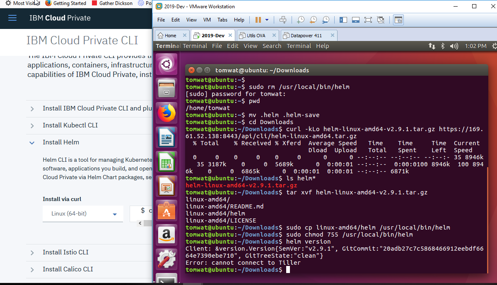
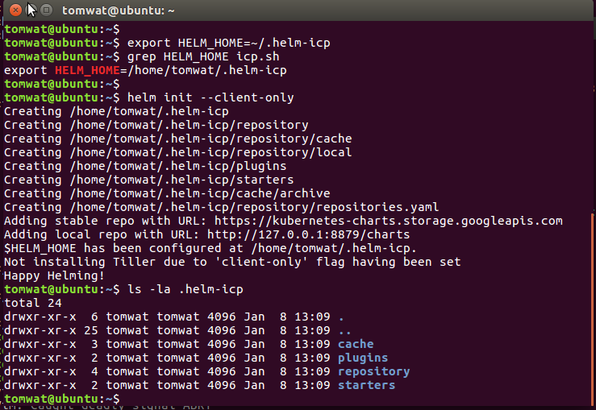

https://www.ibm.com/support/knowledgecenter/SSBS6K_3.1.1/app_center/create_helm_cli.html
Because IBM Cloud Private offers role-based access control, you must install a specific version of the Helm CLI client and provide certificates that contain the IBM Cloud Private access token for a specific account.
Step 0 - Remove Helm from your Linux client if already installed
Step 1 - Install the correct Helm version by using the Web GUI
Step 2 - Initialize the Helm client
Step 3 - Download ICP certificate/key required to do TLS/SSL
Step 4 -
Step 0 - Remove Helm from your Linux client if already installed
This is not going to work since I now have ICP Kubernetes that I will be helming to
So, I now have different config files "icp.sh" and "iks.sh" that will set HELM_HOME to either .helm-iks or .helm-icp
To remove helm, just remove the existing /usr/local/bin/helm binary.
Step 1 - Install the correct Helm version by using the Web GUI
Helm client and server versions must be the same in ICP, probably in IKS also
From the ICP GUI:
$ curl -kLo helm-linux-amd64-v2.9.1.tar.gz https://169.61.52.138:8443/api/cli/helm-linux-amd64.tar.gz
extract the helm binary and cp it to /usr/local/bin/helm
Notice "error - cannot connect to Tiller"
Step 2 - Initialize the Helm client
Set the HELM_HOME on command line and in icp.sh profile
$ helm init --client-only
Step 3 - Download ICP certificate/key required to do Helm-to-Tiller TLS/SSL
By logging into ICP as the admin user, $HELM_HOME is automatically populated with the certificates and keys required
$ helm version --tls
Now shows matching client and Tiller versions
 